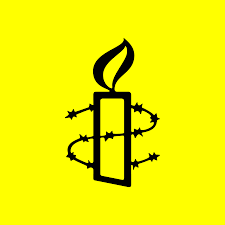
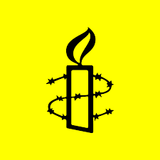

NGOs and Protest Movements
NGOs and protest movements raise awareness and support change in society. They can influence political and social decisions that are important for environmental protection and human rights.
- Greenpeace – Environmental protection and climate action
- WWF – Protection of animals, nature, and ecosystems
- Amnesty International – Human rights and social justice
- Fridays for Future – Youth movement for climate protection
Organization Logos
You can add logos of NGOs here to visually support the topic.
 
